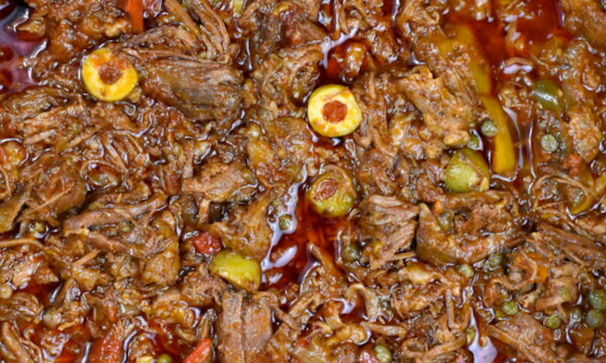

Home
Spanish
Japanese
Cajun
Cuban
Puerto Rican
Cuban Main Recipe
ROPA VIEJA

INGREDIENTS LIST
To season the meat:
3.5lbs chuck roast
1 tsp adobo
1/2 tsp pepper
1 tsp cumin
1 tsp garlic powder
1 tsp oregano
1 tsp paprika
1 packet sazon con culantro y achiote
For Ropa Vieja:
2 tbsp oil
2 onions, sliced
4 small bell peppers (we used 1 each of green, red, yellow and orange), sliced
8-9 garlic cloves, finely chopped
3 tsp dried oregano
3 tsp cumin
3 tsp paprika
2 tsp smoked paprika
1/4 tsp cloves
1/8 tsp allspice
1 cup dry white wine
2 15oz cans crushed tomatoes
4 Tbsp tomato paste
1 cup chicken broth
2 bay leaves
3/4 cup pimento stuffed olives
1/4 cup capers
Salt and pepper to taste
Comment Form
is loading comments...